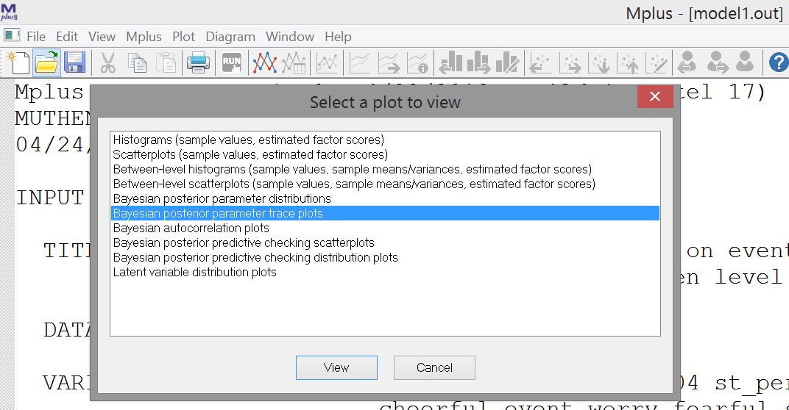

5.1 Random Intercept Model with Implicit Lagged Effects (not DSEM)
In Model 1 we first decompose each variable at each time point (occasion) in two parts:
- a person-specific mean, which has the same value at each occasion but differs from person to person
- a deviation from that mean for each person and occasion.
Hence, we decompose the variables into two latent variables: One with person-specific means, at the between level. One with deviations from these means unique to each occasion and person, at the within level. These deviations can be seen as simply the within-person centered scores for a person at each occasion.
Next, we add two regression relationships:
- Between level: the person means of Somber are regressed on the person means of Event
- Within level: the person-mean centered variable Somber is regressed on the person-mean centered variable Event.
Note that this is not a dynamic SEM model yet in terms of the Mplus specification, because there are no explicit lagged relationships in the model. But note that there is an implicit lagged relationship: Although the two variables are measured at the same occasion (as indicated by the subscript t), the variable Event refers to the interval between t-1 and t, while the variable Somber is referring to the specific time point t. Hence, the reported on events take place before the somber feelings.
This model can be represented as depicted below, with on the left this decomposition, and on the right the regression models specified at each level.

5.1.1 Specify the Mplus Model
To run this model, use the input file model1.inp. In the ANALYSIS command you will find a number of commands that set up the Bayesian multilevel estimation procedure:
ANALYSIS: TYPE = TWOLEVEL;
ESTIMATOR = BAYES;
PROC = 2;
BITER= (2000);
BSEED = 9556;Make sure the following commands for OUTPUT and PLOT are included:
OUTPUT: TECH1 STDYX;
PLOT: TYPE = PLOT3;
FACTORS = ALL;Check out the model specification (i.e., the MODEL command). What do the commands on the within person level and on the between person level do?
Click to show answers
Via ‘Somber ON Event’ at the within level, for each person in the model their somber within-person centered scores are regressed on their within-person centered event scores on the same measurement occasion. The regression coefficients and other model parameters – except for the means of somber and event - are the same for all persons.
Via ‘Event’ we tell Mplus to make Event endogenous like Somber, such that means and variances are estimated for this variable as well - and Event is decomposed in a between person level and within-person level as well. That is, for both Somber and Event we now estimate the mean score over time for each individual inside the model. On the within level the deviations from these means (within-person centered scores) at each time point are modeled. At the between level the relationships among these means, that vary from individual to individual, are modeled.
Via ‘Somber ON Event’ at the between level, it is specified that the person-specific means for Somber are regressed on the person-specific means for Event.
5.1.2 Model Equations & Parameters
While the model is running, write down the model in equations.
- Start with the decomposition, i.e., \(E_{it}=\) …
Click to show answers
\[S_{it} = \mu_{S i} + S_{it}^{(w)}\] \[E_{it} = \mu_{E i} + E_{it}^{(w)}\]
- Write down the within level model. Which parameters are estimated at this level?
Click to show answers
\[S_{it}^{(w)} = b \times E_{it}^{(w)} + \zeta_{S it}\] Parameters estimated at this level:
- Fixed within-person slope b (same for each person)
- Residual within-person variance for S, the variance of \(\zeta_Sit\)
- Within-person variance of the (made endogenous) predictor \(E^{(w)}_{it}\)
- Write down the between level model. Which parameters are estimated at this level?
Click to show answers
\[\mu_{S i} = \gamma_{00} + \gamma_{01} \times \mu_{Ei} + \zeta_{Si} \] Parameters estimated at this level:
- Grand intercept \(\gamma_{00}\)
- Between-person slope \(\gamma_{01}\)
- Between-person residual variance of \(\zeta_{Si}\)
- Mean of the between-person predictor \(\mu_{Ei}\)
- Variance of the between-person predictor \(\mu_{Ei}\)
5.1.3 Convergence
When the model is finished running, we first need to check the trace plots of the Bayesian estimation procedure to see if there are signs for non-convergence. Go to the icon with the two graphs, and click on this. Then, choose the option “Bayesian posterior parameter trace plots” and click “View”.

By clicking “OK” in the next window, the trace plot of parameter 1 appears. You can use the icons with the histograms and the left and right headed arrows to move backward and forward through the parameters (their names are in the headings of the plots).

Write down how these parameters relate to the ones you identified above (in questions c. and d.),
Are there any problems with convergence based on these plots? Can you tell what parameter from question b each plot is about?
Click to show answers
- Parameter 1, %WITHIN%: SOMBER ON EVENT → within-person regression coefficient b
- Parameter 2, %WITHIN%: SOMBER → within-person residual variance for somber
- Parameter 3, %WITHIN%: EVENT → within-person variance on Event
- Parameter 4, %BETWEEN%: [SOMBER] → between-person intercept on Somber (\(\gamma_{00}\))
- Parameter 5, %BETWEEN%: [EVENT] → between-person mean on Event
- Parameter 6, %BETWEEN%: SOMBER ON EVENT → between-person regression coefficient (\(\gamma_{01}\))
- Parameter 7, %BETWEEN%: SOMBER → between-person residual variance of somber
- Parameter 8, %BETWEEN%: EVENT → between-person variance on Event
Convergence looks fine for the parameters.
5.1.4 Interpret the Results
Go to the output, and consider the parameter estimates. Interpret the findings for the within-person and the between-person slopes (e.g., do they differ from zero, are they positive or negative, what about their size?).
Click to show answers
Within Level
SOMBER ON
EVENT -0.203 0.010 0.000 -0.223 -0.184 *
Between Level
SOMBER ON
EVENT -0.953 0.159 0.000 -1.266 -0.651 *Both slopes are negative, implying that:
- Within person: People’s increased (relative to their mean level) Event scoretends to be followed by a decreased (relative to their mean level) temporary somberness score. A 1 unit higher event score tends to be followed by a decrease of .20 units in their somber score.
- Between person: People a relatively high (compared to other people) mean for event, tend to have a relatively low (compared to other people) mean for somberness. A 1 unit higher mean would imply about a .95 units lower mean for Somber.
The between-person slope is more than 4 times steeper: Note however that the between-person variance in Event is about 10 times smaller than the within-person variance in Event (0.278 vs. 2.844). Hence, in the next step we look at the standardized results.
5.1.5 Standardized Results
Check the standardized results to compare the size of the slopes within and between.
Click to show answers
SOMBER ON
EVENT -0.259 0.012 0.000 -0.284 -0.236 *
SOMBER ON
EVENT -0.529 0.074 0.000 -0.656 -0.374 *The standardized between slope is more than twice as steep than the within slope.
In terms of \(R^{2}\):
- 6.7% of the momentary within-person variability in Somber is explained by within-person variability in Events.
- 28.0% of the stable between-person variability in Somber is predicted by between-person differences in average Event.